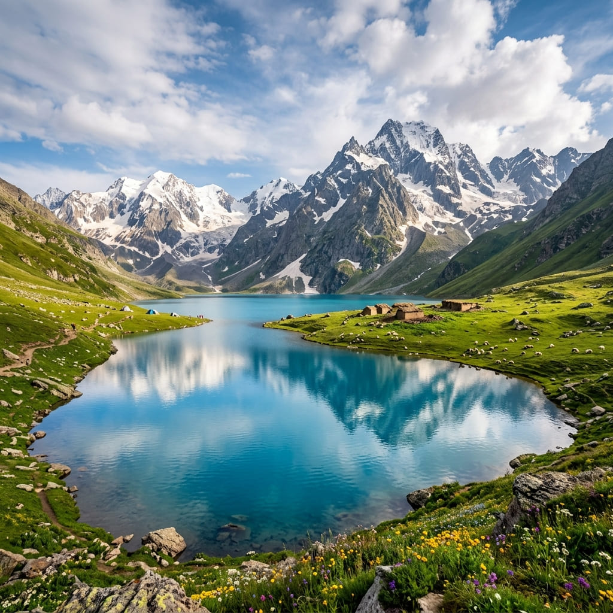

Kashmir Great Lakes
Step up to seven lakes and three passes.
Explore
Twin almond-shaped lakes split by a single ridge — Tarsar bright and welcoming, Marsar moody and cloud-veiled. The gentler, dreamier sibling of the Great Lakes.

The Trek
Starting from the meadows of Aru near Pahalgam, Tarsar Marsar is a trek of water and grass — riverside trails, wildflower pastures, and a night camped right on Tarsar's shore where the peaks turn pink at dawn.
Fewer crossings and mellower gradients make this our most-recommended first Himalayan trek, yet the beauty asks no apology to any route in India.
₹16,900 / person · fixed departures Jun–Sep
Book This TripDay by Day
Scenic transfer via Pahalgam to Aru (2,400 m). Evening briefing and gear check beside the Lidder river.
An easy, gorgeous opening day through pine forest and riverside meadows to the shepherd grazing grounds of Lidderwat.
Climb steadily past Gujjar huts into higher meadows, camping at Shekwas with the ridgelines drawing close.
A short, spectacular walk to camp right on the almond-shaped shore of Tarsar — sunrise here is unforgettable.
Cross the 4,000 m pass for the classic top-down view of both lakes, then descend to camp at hidden Sundersar.
A dawn walk to peer down at moody, cloud-veiled Marsar, then a long descent back toward the meadows.
Final forest descent to Aru and transfer back to Srinagar.
Why You'll Love It
Tarsar and Marsar — two moods of blue, divided by one dramatic ridge.
A night pitched on Tarsar's shore, with reflections and silence you'll never forget.
Gentle gradients and a supportive crew make this an ideal first high-Himalaya trek.
The Fine Print
The Route
Distances and positions are illustrative. Your trek leader carries GPS tracks, and a detailed day-by-day map pack is shared with every confirmed booking.
Good to Know
Slightly gentler. Fewer high pass crossings and softer gradients make it a superb first Himalayan trek, though the scenery rivals its more famous sibling.
Tarsar Pass / the Marsar viewpoint, around 4,000 m.
From Aru, a postcard meadow village near Pahalgam, roughly a 3-hour drive from Srinagar.
Mid-June to mid-September. Early season brings snowmelt streams and lush green; late season brings clear skies and golden meadows.
Small groups, gentle trails, unforgettable camps — book your Tarsar Marsar dates.